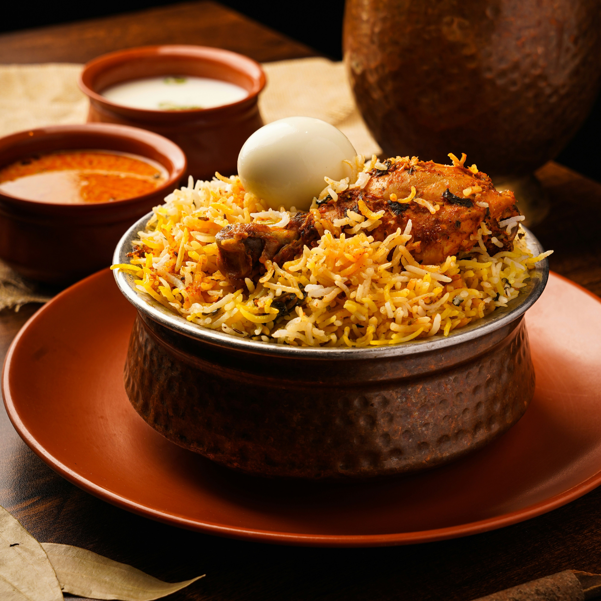

Biryani
Biryani is a flavorful and aromatic rice dish cooked with fragrant spices, tender meat or vegetables, and often layered with saffron-infused rice.
Time: 45 minutes
Protein:
- Chicken (1kg) provides around 230g of protein.
- Yogurt (if used in marinade) adds 10g of protein per 100g.
- Lentils or chickpeas (if added) provide 9g of protein per 100g.
Recipe Details
Ingredients
Steps to Make Biryani:
Listen to the instructions here:
- In a large bowl, combine 1 cup yogurt, 2 tablespoons ginger-garlic paste, 2 tablespoons biryani masala, 1 tablespoon red chili powder, 1/2 teaspoon turmeric powder, 1 teaspoon garam masala, salt to taste, and 2 tablespoons lemon juice.
- Mix well to form a smooth marinade.
- Add 1 kg chicken pieces to the marinade and coat them thoroughly.
- Cover the bowl and refrigerate the marinated chicken for at least 2 hours, or overnight for best results.
- Rinse 2 cups basmati rice under cold water until the water runs clear, then soak in water for 30 minutes. Drain.
- In a large pot, bring 4 cups of water to a boil. Add 2-3 green cardamom pods, 4-5 cloves, 1 bay leaf, 1 cinnamon stick, and 1 teaspoon salt.
- Add the soaked and drained rice to the boiling water and cook until it is 70% cooked (the rice should still be slightly firm). Drain the rice and set it aside.
- Heat 2 tablespoons of ghee or oil in a large, heavy-bottomed pan over medium heat. Add 2 large sliced onions and cook until they turn golden brown.
- Add 2 chopped tomatoes and cook until they become soft and start to break down.
- Add the marinated chicken to the pan and cook, stirring occasionally, until the chicken is cooked through and the oil begins to separate from the mixture (about 20-30 minutes).
- Stir in 1/2 cup chopped mint leaves and a handful of chopped coriander leaves.
- In a large, heavy-bottomed pot, spread a layer of the cooked chicken mixture. Add a layer of the partially cooked rice over the chicken.
- Drizzle half of the saffron milk (1/4 cup) over the rice. Repeat the layers with the remaining chicken and rice, finishing with a layer of rice.
- Drizzle the remaining saffron milk over the top layer of rice. Optional: Sprinkle some fried onions on top for added flavor and garnish.
- Cover the pot with a tight-fitting lid. Seal the edges with dough if necessary to prevent steam from escaping. Cook on low heat for 20-30 minutes to allow the flavors to meld and the rice to finish cooking.
- Turn off the heat and let the biryani rest for 10 minutes before opening the lid.
- Gently fluff the biryani with a fork to mix the layers. Serve hot with raita, salad, or pickles.